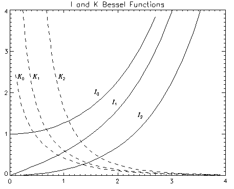

The BESELI function returns the I Bessel function of order N for the argument X . The BESELI function is adapted from “SPECFUN - A Portable FORTRAN Package of Special Functions and Test Drivers”, W. J. Cody, Algorithm 715, ACM Transactions on Mathematical Software , Vol 19, No. 1, March 1993.
Result = BESELI( X , N [, / DOUBLE ] [, ITER = variable ])
If both arguments are scalars, the function returns a scalar. If both arguments are arrays, the function matches up the corresponding elements of X and N , returning an array with the same dimensions as the smallest array. If one argument is a scalar and the other argument is an array, the function uses the scalar value with each element of the array, and returns an array with the same dimensions as the smallest input array.
Note: If the function does not converge for an element of X , the corresponding element of the Result array will be set to the IEEE floating-point value NaN.
A scalar or array specifying the values for which the Bessel function is required. Values for X must be in the range -709 to 709.
Note: If X is negative then N must be an integer (either positive or negative).
A scalar or array specifying the order of the Bessel function to calculate. Values for N can be integers or real numbers. If N is negative then it must be an integer.
Set this keyword equal to one to return a double-precision result, or to zero to return a single-precision result. The computations will always be done using double precision. The default is to return a single-precision result if both inputs are single precision, and to return a double-precision result in all other cases.
Set this keyword equal to a named variable that will contain the number of iterations performed. If the routine converged, the stored value will be equal to the order N . If X or N are arrays, ITER will contain a scalar representing the maximum number of iterations.
Note: If the routine did not converge for an element of X , the corresponding element of the Result array will be set to the IEEE floating-point value NaN, and ITER will contain the largest order that would have converged for that X value.
The following example plots the I and K Bessel functions for orders 0, 1 and 2:
X = FINDGEN(40)/10
;Plot I and K Bessel Functions:
PLOT, X, BESELI(X, 0), MAX_VALUE=4, $
TITLE = 'I and K Bessel Functions'
OPLOT, X, BESELI(X, 1)
OPLOT, X, BESELI(X, 2)
OPLOT, X, BESELK(X, 0), LINESTYLE=2
OPLOT, X, BESELK(X, 1), LINESTYLE=2
OPLOT, X, BESELK(X, 2), LINESTYLE=2
;Annotate plot:
xcoords = [.18, .45, .95, 1.4, 1.8, 2.4]
ycoords = [2.1, 2.1, 2.1, 1.8, 1.6, 1.4]
labels = ['!8K!X!D0','!8K!X!D1','!8K!X!D2','!8I!X!D0', $
'!8I!X!D1','!8I!X!D2']
XYOUTS, xcoords, ycoords, labels, /DATA
This results in the following plot:
|
 |
For an example calculating the accuracy of the Bessel function, see Example 2 for the BESELJ routine.
|
Original |
Introduced |
|
5.6 |
Added DOUBLE and ITER keywords |